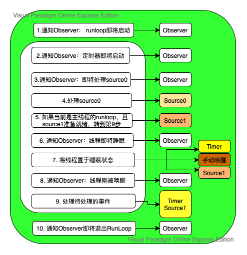

RunLoop概念
事件轮询
简单来说就是do-while循环，如下逻辑代码：
1 | int main(int argc, char * argv[]) { |
这种do-while模型通常被称作事件轮询。例如 Node.js 的事件处理，Windows 程序的消息循环。OSX/iOS中的RunLoop也是该形式。
概念
一般来说一个线程一次只能执行一个任务，执行完后线程就会退出，如果我们希望线程在执行完任务后仍然存在，可采用事件轮询的方式。实现这种模式的关键在于: 如何管理事件/消息，让线程在没有处理消息时休眠以避免占用资源，在有消息时能立刻被唤醒。
所以，RunLoop实际是一个对象，这个对象管理了其需要处理的事件和消息，并且提供了一个入口函数来执行事件轮询逻辑。线程执行该函数后，就会一直处于函数内容 接收消息->等待->处理 的循环中，直到循环结束（比如改变running=False），函数返回.
RunLoop 与线程的关系
苹果不允许直接创建RunLoop，它只提供了两个自动获取的函数：CFRunLoopGetMain() 和 CFRunLoopGetCurrent()。这两个函数内部的逻辑大概是下面这样:
1 | /// 全局的Dictionary，key 是 pthread_t， value 是 CFRunLoopRef |
从上述代码可知线程和 RunLoop 之间是一一对应的，其关系是保存在一个全局的 Dictionary 里。
线程刚创建时并没有 RunLoop，如果你不主动获取，那它一直都不会有。RunLoop 的创建是发生在第一次获取时，RunLoop 的销毁一般是发生在线程结束时，也可以手动退出参考文章。你只能在一个线程的内部获取其 RunLoop（主线程除外）。
RunLoop 对外的接口
在 CoreFoundation 里面关于 RunLoop 有5个类:
1 | CFRunLoopRef //RunLoop对象 |
其中 CFRunLoopModeRef 类并没有对外暴露，只是通过 CFRunLoopRef 的接口进行了封装。他们的关系如下:

一个RunLoop对象（CFRunLoopRef）包含若干个mode（CFRunLoopModeRef），一个mode又包含若干个 Source（CFRunLoopSourceRef）、Timer（CFRunLoopTimerRef）和Observer（CFRunLoopObserverRef）。
runloop每次调用时只能指定一个 mode ，这个 mode 被称作当前运行模式（CurrentMode）。如果需要切换该模式，需要退出当前 Loop，再重新指定一个 mode 进入。这样做是为了分割不同的Source、Timer和Observer，让其互不影响.
CFRunLoopRef
在 OSX/iOS 系统中提供了两个这样的对象：NSRunLoop 和 CFRunLoopRef.
我们可通过以下方式来获取 Core Foundation 框架中的 CFRunLoopRef 对象，它提供了纯 C 函数的 API，所以这些 API 都是线程安全的:
1 | CFRunLoopGetCurrent(); // 获得当前线程的 RunLoop 对象 |
对应的，在Foundation 框架下获取 NSRunLoop 对象，他提供了面向对象的 API，这些 API 不是线程安全的:
1 | [NSRunLoop currentRunLoop]; // 获得当前线程的 RunLoop 对象 |
CFRunLoopRef源码可参考:
http://opensource.apple.com/tarballs/CF/
https://github.com/apple/swift-corelibs-foundation/
CFRunLoopModeRef
系统默认预定义了以下运行模式：
| 模式 | 说明 |
|---|---|
| kCFRunLoopCommonModes(NSRunLoopCommonModes) | 这是一组可配置的common模式。 将输入源与此模式相关联也会将其与组中的每个模式相关联。 对于Cocoa应用程序，此集合默认包括默认，模态和事件跟踪模式。 Core Foundation最初只包含默认模式。 您可以使用CFRunLoopAddCommonMode函数将自定义模式添加到集合中。 |
| kCFRunLoopDefaultMode (NSDefaultRunLoopMode) | 默认模式是用于大多数操作的模式。 大多数情况下，您应该使用此模式启动运行循环并配置输入源。 |
| UITrackingRunLoopMode | 事件跟踪模式（例如 ScrollView 触摸滑动） |
| UIInitializationRunLoopMode | 在刚启动App时第进入的第一个 Mode，启动完成后就不再使用 |
| NSEventReceiveRunLoopMode | 接受系统内部事件，通常用不到 |
| NSModalPanelRunLoopMode | 使用此模式来标识用于模态面板的事件 |
其中kCFRunLoopDefaultMode、UITrackingRunLoopMode、kCFRunLoopCommonModes是我们开发中常用到的模式.
一个模式可以把自己标记成“Common”属性（通过将其 ModeName 添加到 RunLoop 的 “commonModes” 中）。每当 RunLoop 的内容发生变化时，RunLoop 都会自动将 _commonModeItems 里的 Source/Observer/Timer 同步到具有 “Common” 标记的所有Mode里。主线程中的两个预置 Mode：kCFRunLoopDefaultMode 和 UITrackingRunLoopMode都被标记为”Common”属性。
上面我们也说过每个模式都是独立运行的，但是有时你需要一个 Timer，在两个 Mode 中都能得到回调，一种办法就是将这个 Timer 分别加入这两个 Mode。还有一种方式，就是将 Timer 加入到顶层的 RunLoop 的 “commonModeItems” 中。”commonModeItems” 被 RunLoop 自动更新到所有具有”Common”属性的 Mode 里去。
CFRunLoop对外暴露的管理 Mode 接口只有下面2个:
1 | CFRunLoopAddCommonMode(CFRunLoopRef runloop, CFStringRef modeName); |
Mode 暴露的管理 mode item 的接口有下面几个：
1 | CFRunLoopAddSource(CFRunLoopRef rl, CFRunLoopSourceRef source, CFStringRef modeName); |
你只能通过 mode name 来操作内部的 mode，当你传入一个新的 mode name 但 RunLoop 内部没有对应 mode 时，RunLoop会自动帮你创建对应的 CFRunLoopModeRef。对于一个 RunLoop 来说，其内部的 mode 只能增加不能删除。
CFRunLoopSourceRef
事件产生的地方，Source有两个版本：Source0 和 Source1。
Source0
它只包含了一个回调（函数指针），并不能主动触发事件，通常是用户操作行为如用户点击事件。使用时，你需要先调用 CFRunLoopSourceSignal(source)，将这个 Source 标记为待处理，然后手动调用 CFRunLoopWakeUp(runloop) 来唤醒 RunLoop，让其处理这个事件。
Source1
Source1 包含了一个 mach_port 和一个回调（函数指针），被用于通过内核和其他线程相互发送消息。这种 Source 能主动唤醒 RunLoop 的线程，通常是系统事件。
CFRunLoopTimerRef
是基于时间的触发器，它和 NSTimer 是toll-free bridged 的，可以混用。其包含一个时间长度和一个回调（函数指针）。当其加入到 RunLoop 时，RunLoop会注册对应的时间点，当时间点到时，RunLoop会被唤醒以执行那个回调。
CFRunLoopObserverRef
每个 Observer 都包含了一个回调（函数指针），当 RunLoop 的状态发生变化时，观察者就能通过回调接受到这个变化。可以观测的时间点有以下几个：
1 | typedef CF_OPTIONS(CFOptionFlags, CFRunLoopActivity) { |
上面的 Source/Timer/Observer 被统称为 mode item，一个 item 可以被同时加入多个 mode。但一个 item 被重复加入同一个 mode 时是不会有效果的。如果一个 mode 中一个 item 都没有，则 RunLoop 会直接退出，不进入循环。
RunLoop 的运行逻辑
有苹果官方文档可知:在每次运行开启RunLoop的时候，所在线程的RunLoop会自动处理之前未处理的事件，并且通知相关的观察者，具体顺序如下所示:

1 | 1. 通知观察者runloop即将启动。 |
关于 5. 如果当前是主线程的runloop，且source1准备就绪，转到第9步 的论证可参考该文章关于runloop，好多人都理解错了!
配置、启动、退出RunLoop
配置RunLoop
在我们为线程手动添加runloop时，必须为runloop添加至少一个输入源或者定时器，如果没有添加，当我们运行runloop时会立即退出.
下面是创建runloop的代码:
1 | - (void)threadMain { |
启动RunLoop
RunLoop的启动方式一共有三种:
1 | 1. 无条件 （最简单的方式，会使线程进入死循环（无限调用3），结束的唯一方式是 kill 它） |
这三种进入方式分别对应了下面三种方法:
1 | run |
退出RunLoop
runloop 的退出有如下两种方式
1 | 1. 设置超时时间 |
实际结果是当我们使用 CFRunLoopStop() 也无法正确退出参考该文章，该文章指出:
- CFRunLoopStop()方法只会结束当前的 runMode:beforeDate: 调用，而不会结束后续的调用。
因此正确的手动结束runloop可采用以下两种方式:
方式一:
1 | - (void)memoryTest { |
方式二:
1 | BOOL shouldKeepRunning = YES; // global |
以上内容参考以下文章: